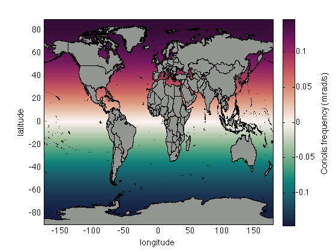

coriolisf documentation
The coriolisf function returns the Coriolis frequency for any given latitude(s). The Coriolis frequency is sometimes called the Coriolis parameter or the Coriolis coefficient. It is a function of only latitude.
Note: this function only applies to Earth or other celestial bodies whose rate of rotation is 7.2921 x 10^-5 radians per second.
Back to Climate Data Tools Contents
Contents
Syntax
f = coriolisf(lat)
Description
f = coriolisf(lat) returns the Coriolis frequency in radians per second for point(s) at latitude(s) lat.
Example
Consider a 1°x1° grid, which we can easily make via geogrid:
[lat,lon] = geogrid;
The Coriolis frequency associated with each grid cell is a function of only latitude:
f = coriolisf(lat);
And here's what the coriolis frequency looks like. Below I'm multiplying f by 1000 to convert from rad/s to mrad/s.
pcolor(lon,lat,f*1e3) shading interp cb = colorbar; ylabel(cb,'Coriolis frequency (mrad/s)') ylabel 'latitude' xlabel 'longitude' % Set the colormap to a diverging one: cmocean curl % Overlay national borders: borders('countries','facecolor',rgb('gray'))
Above I used the cmocean curl colormap, overlaid national borders with borders, and obtained the RGB values of 'gray' with the rgb function.
Author Info
The coriolisf function and supporting documentation were written by Chad A. Greene of the University of Texas at Austin, Institute for Geophysics (UTIG), February 2017.